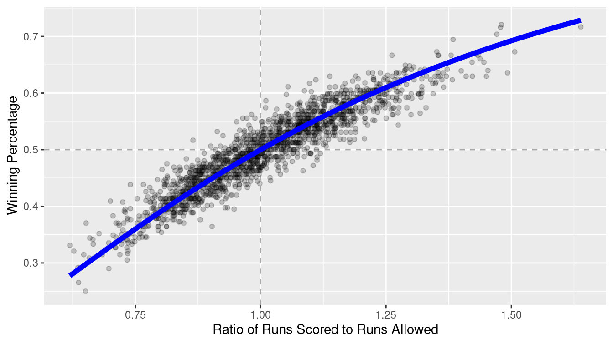
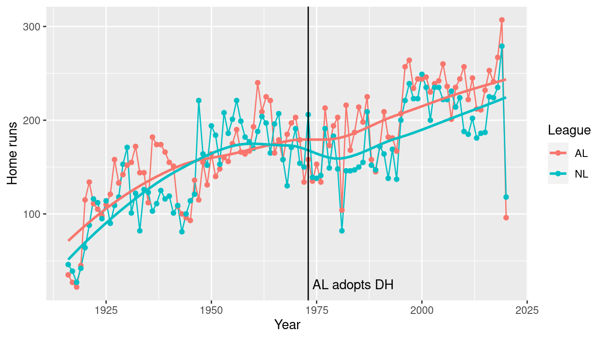
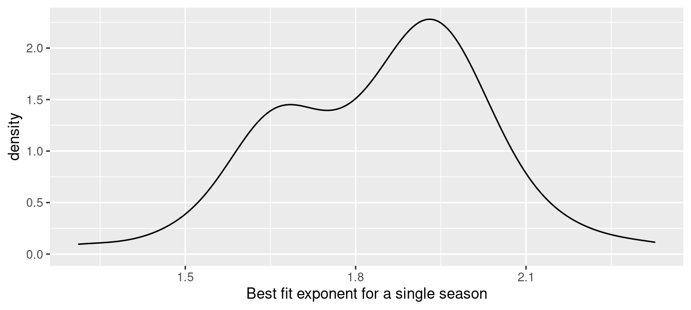
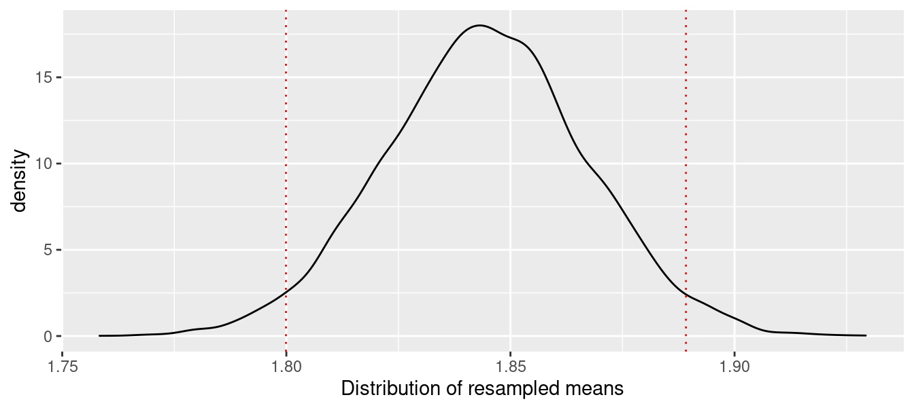
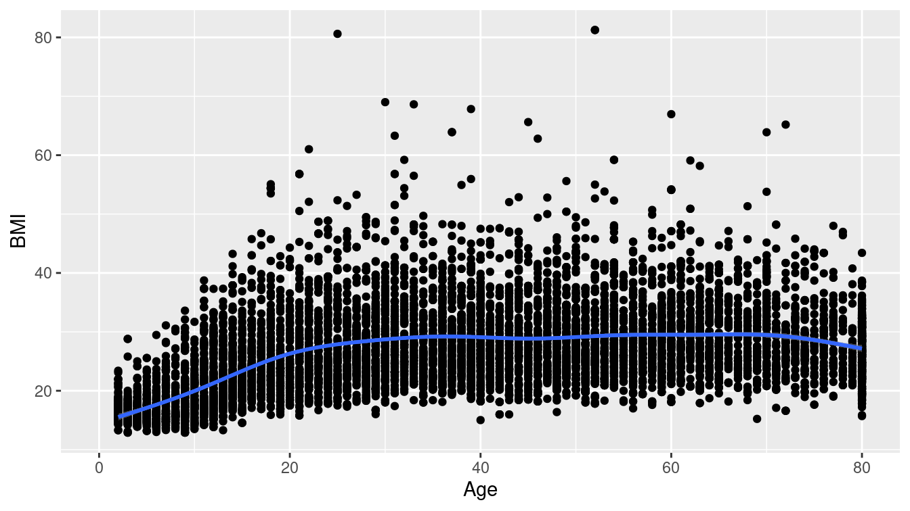
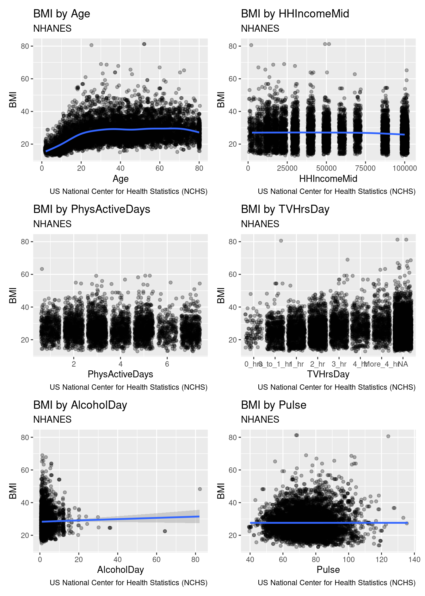

Chapter 7 Iteration
Calculators free human beings from having to perform arithmetic computations by hand. Similarly, programming languages free humans from having to perform iterative computations by re-running chunks of code, or worse, copying-and-pasting a chunk of code many times, while changing just one or two things in each chunk.
For example, in Major League Baseball there are 30 teams, and the game has been played for over 100 years. There are a number of natural questions that we might want to ask about each team (e.g., which player has accrued the most hits for that team?) or about each season (e.g., which seasons had the highest levels of scoring?). If we can write a chunk of code that will answer these questions for a single team or a single season, then we should be able to generalize that chunk of code to work for all teams or seasons. Furthermore, we should be able to do this without having to re-type that chunk of code. In this section, we present a variety of techniques for automating these types of iterative operations.
7.1 Vectorized operations
In every programming language that we can think of, there is a way to write a loop. For example, you can write a for() loop in R the same way you can with most programming languages.
Recall that the Teams data frame contains one row for each team in each MLB season.
library(tidyverse)
library(mdsr)
library(Lahman)
names(Teams) [1] "yearID" "lgID" "teamID" "franchID"
[5] "divID" "Rank" "G" "Ghome"
[9] "W" "L" "DivWin" "WCWin"
[13] "LgWin" "WSWin" "R" "AB"
[17] "H" "X2B" "X3B" "HR"
[21] "BB" "SO" "SB" "CS"
[25] "HBP" "SF" "RA" "ER"
[29] "ERA" "CG" "SHO" "SV"
[33] "IPouts" "HA" "HRA" "BBA"
[37] "SOA" "E" "DP" "FP"
[41] "name" "park" "attendance" "BPF"
[45] "PPF" "teamIDBR" "teamIDlahman45" "teamIDretro" What might not be immediately obvious is that columns 15 through 40 of this data frame contain numerical data about how each team performed in that season. To see this, you can execute the str() command to see the structure of the data frame, but we suppress that output here. For data frames, a similar alternative that is a little cleaner is glimpse().
str(Teams)
glimpse(Teams)Suppose you are interested in computing the averages of these 26 numeric columns.
You don’t want to have to type the names of each of them, or re-type the mean() command 26 times.
Seasoned programmers would identify this as a situation in which a loop is a natural and efficient solution.
A for() loop will iterate over the selected column indices.
averages <- NULL
for (i in 15:40) {
averages[i - 14] <- mean(Teams[, i], na.rm = TRUE)
}
names(averages) <- names(Teams)[15:40]
averages R AB H X2B X3B HR BB SO
680.496 5126.260 1339.657 228.330 45.910 104.929 473.020 755.573
SB CS HBP SF RA ER ERA CG
109.786 46.873 45.411 44.233 680.495 572.404 3.836 48.011
SHO SV IPouts HA HRA BBA SOA E
9.584 24.267 4010.716 1339.434 104.929 473.212 755.050 181.732
DP FP
132.669 0.966 This certainly works. However, there are a number of problematic aspects of this code (e.g., the use of multiple magic numbers like 14, 15, and 40). The use of a for() loop may not be ideal.
For problems of this type, it is almost always possible (and usually preferable) to iterate without explicitly defining a loop.
R programmers prefer to solve this type of problem by applying an operation to each element in a vector.
This often requires only one line of code, with no appeal to indices.
It is important to understand that the fundamental architecture of R is based on vectors. That is, in contrast to general-purpose programming languages like C++ or Python that distinguish between single items—like strings and integers—and arrays of those items, in R a “string” is just a character vector of length 1. There is no special kind of atomic object. Thus, if you assign a single “string” to an object, R still stores it as a vector.
a <- "a string"
class(a)[1] "character"is.vector(a)[1] TRUElength(a)[1] 1As a consequence of this construction, R is highly optimized for vectorized operations (see Appendix B for more detailed information about R internals). Loops, by their nature, do not take advantage of this optimization. Thus, R provides several tools for performing loop-like operations without actually writing a loop. This can be a challenging conceptual hurdle for those who are used to more general-purpose programming languages.
Try to avoid writing for() loops, even when it seems like the easiest solution.
Many functions in R are vectorized. This means that they will perform an operation on every element of a vector by default. For example, many mathematical functions (e.g., exp()) work this way.
exp(1:3)[1] 2.72 7.39 20.09Note that vectorized functions like exp() take a vector as an input, and return a vector of the same length as an output.
This is importantly different behavior than so-called summary functions, which take a vector as an input, and return a single value. Summary functions (e.g., mean()) are commonly useful within a call to summarize(). Note that when we call mean() on a vector, it only returns a single value no matter how many elements there are in the input vector.
mean(1:3)[1] 2Other functions in R are not vectorized. They may assume an input that is a vector of length one, and fail or exhibit strange behavior if given a longer vector. For example, if() throws a warning if given a vector of length more than one.
if (c(TRUE, FALSE)) {
cat("This is a great book!")
}Warning in if (c(TRUE, FALSE)) {: the condition has length > 1 and only the
first element will be usedThis is a great book!As you get more comfortable with R, you will develop intuition about which functions are vectorized. If a function is vectorized, you should make use of that fact and not iterate over it. The code below shows that computing the exponential of the first 10,000 integers by appealing to exp() as a vectorized function is much, much faster than using map_dbl() to iterate over the same vector. The results are identical.
x <- 1:1e5
bench::mark(
exp(x),
map_dbl(x, exp)
)# A tibble: 2 × 6
expression min median `itr/sec` mem_alloc `gc/sec`
<bch:expr> <bch:tm> <bch:tm> <dbl> <bch:byt> <dbl>
1 exp(x) 900µs 1.59ms 652. 1.53MB 21.2
2 map_dbl(x, exp) 135ms 135.08ms 7.40 788.62KB 29.6Try to always make use of vectorized functions before iterating an operation.
7.2 Using across() with dplyr functions
The mutate() and summarize() verbs described in Chapter 4 can take advantage of an adverb called across() that applies operations programmatically. In the example above, we had to observe that columns 15 through 40 of the Teams data frame were numeric, and hard-code those observations as magic numbers. Rather than relying on these observations to identify which variables are numeric—and therefore which variables it makes sense to compute the average of—we can use the across() function to do this work for us. The chunk below will compute the average values of only those variables in Teams that are numeric.
Teams %>%
summarize(across(where(is.numeric), mean, na.rm = TRUE)) yearID Rank G Ghome W L R AB H X2B X3B HR BB SO SB
1 1958 4.05 150 78 74.5 74.5 680 5126 1340 228 45.9 105 473 756 110
CS HBP SF RA ER ERA CG SHO SV IPouts HA HRA BBA SOA E DP
1 46.9 45.4 44.2 680 572 3.84 48 9.58 24.3 4011 1339 105 473 755 182 133
FP attendance BPF PPF
1 0.966 1375102 100 100Note that this result included several variables (e.g., yearID, attendance) that were outside of the range we defined previously.
The across() adverb allows us to specify the set of variables that summarize() includes in different ways. In the example above, we used the predicate function is.numeric() to identify the variables for which we wanted to compute the mean.
In the following example, we compute the mean of yearID, a series of variables from R (runs scored) to SF (sacrifice flies) that apply only to offensive players, and the batting park factor (BPF). Since we are specifying these columns without the use of a predicate function, we don’t need to use where().
Teams %>%
summarize(across(c(yearID, R:SF, BPF), mean, na.rm = TRUE)) yearID R AB H X2B X3B HR BB SO SB CS HBP SF BPF
1 1958 680 5126 1340 228 45.9 105 473 756 110 46.9 45.4 44.2 100The across() function behaves analogously with mutate().
It provides an easy way to perform an operation on a set of variables without having to type or copy-and-paste the name of each variable.
7.3 The map() family of functions
More generally, to apply a function to each item in a list or vector, or the columns of a data frame12, use map() (or one of its type-specific variants). This is the main function from the purrr package. In this example, we calculate the mean of each of the statistics defined above, all at once. Compare this to the for() loop written above. Which is syntactically simpler? Which expresses the ideas behind the code more succinctly?
Teams %>%
select(15:40) %>%
map_dbl(mean, na.rm = TRUE) R AB H X2B X3B HR BB SO
680.496 5126.260 1339.657 228.330 45.910 104.929 473.020 755.573
SB CS HBP SF RA ER ERA CG
109.786 46.873 45.411 44.233 680.495 572.404 3.836 48.011
SHO SV IPouts HA HRA BBA SOA E
9.584 24.267 4010.716 1339.434 104.929 473.212 755.050 181.732
DP FP
132.669 0.966 The first argument to map_dbl() is the thing that you want to do something to (in this case, a data frame). The second argument specifies the name of a function (the argument is named .f). Any further arguments are passed as options to .f. Thus, this command applies the mean() function to the 15th through the 40th columns of the Teams data frame, while removing any NAs that might be present in any of those columns. The use of the variant map_dbl() simply forces the output to be a vector of type double.13
Of course, we began by taking the subset of the columns that were all numeric values. If you tried to take the mean() of a non-numeric vector, you would get a warning (and a value of NA).
Teams %>%
select(teamID) %>%
map_dbl(mean, na.rm = TRUE)Warning in mean.default(.x[[i]], ...): argument is not numeric or logical:
returning NAteamID
NA If you can solve your problem using across() and/or where() as described in Section 7.2, that is probably the cleanest solution. However, we will show that the map() family of functions provides a much more general set of capabilities.
7.4 Iterating over a one-dimensional vector
7.4.1 Iterating a known function
Often you will want to apply a function to each element of a vector or list. For example, the baseball franchise now known as the Los Angeles Angels of Anaheim has gone by several names during its history.
angels <- Teams %>%
filter(franchID == "ANA") %>%
group_by(teamID, name) %>%
summarize(began = first(yearID), ended = last(yearID)) %>%
arrange(began)
angels# A tibble: 4 × 4
# Groups: teamID [3]
teamID name began ended
<fct> <chr> <int> <int>
1 LAA Los Angeles Angels 1961 1964
2 CAL California Angels 1965 1996
3 ANA Anaheim Angels 1997 2004
4 LAA Los Angeles Angels of Anaheim 2005 2020
The franchise began as the Los Angeles Angels (LAA) in 1961, then became the California Angels (CAL) in 1965, the Anaheim Angels (ANA) in 1997, before taking their current name (LAA again) in 2005. This situation is complicated by the fact that the teamID LAA was re-used. This sort of schizophrenic behavior is unfortunately common in many data sets.
Now, suppose we want to find the length, in number of characters, of each of those team names. We could check each one manually using the function nchar():
angels_names <- angels %>%
pull(name)
nchar(angels_names[1])[1] 18nchar(angels_names[2])[1] 17nchar(angels_names[3])[1] 14nchar(angels_names[4])[1] 29But this would grow tiresome if we had many names. It would be simpler, more efficient, more elegant, and scalable to apply the function nchar() to each element of the vector angel_names. We can accomplish this using map_int(). map_int() is like map() or map_dbl(), but it always returns an integer vector.
map_int(angels_names, nchar)[1] 18 17 14 29The key difference between map_int() and map() is that the former will always return an integer vector, whereas the latter will always return a list. Recall that the main difference between lists and data.frames is that the elements (columns) of a data.frame have to have the same length, whereas the elements of a list are arbitrary. So while map() is more versatile, we usually find map_int() or one of the other variants to be more convenient when appropriate.
It’s often helpful to use map() to figure out what the return type will be, and then switch to the appropriate type-specific map() variant.
This section was designed to illustrate how map() can be used to iterate a function over a vector of values. However, the choice of the nchar() function was a bit silly, because nchar() is already vectorized. Thus, we can use it directly!
nchar(angels_names)[1] 18 17 14 297.4.2 Iterating an arbitrary function
One of the most powerful uses of iteration is that you can apply any function, including a function that you have defined (see Appendix C for a discussion of how to write user-defined functions). For example, suppose we want to display the top-5 seasons in terms of wins for each of the Angels teams.
top5 <- function(data, team_name) {
data %>%
filter(name == team_name) %>%
select(teamID, yearID, W, L, name) %>%
arrange(desc(W)) %>%
head(n = 5)
}We can now do this for each element of our vector with a single call to map().
Note how we named the data argument to ensure that the team_name argument was the one that accepted the value over which we iterated.
angels_names %>%
map(top5, data = Teams)[[1]]
teamID yearID W L name
1 LAA 1962 86 76 Los Angeles Angels
2 LAA 1964 82 80 Los Angeles Angels
3 LAA 1961 70 91 Los Angeles Angels
4 LAA 1963 70 91 Los Angeles Angels
[[2]]
teamID yearID W L name
1 CAL 1982 93 69 California Angels
2 CAL 1986 92 70 California Angels
3 CAL 1989 91 71 California Angels
4 CAL 1985 90 72 California Angels
5 CAL 1979 88 74 California Angels
[[3]]
teamID yearID W L name
1 ANA 2002 99 63 Anaheim Angels
2 ANA 2004 92 70 Anaheim Angels
3 ANA 1998 85 77 Anaheim Angels
4 ANA 1997 84 78 Anaheim Angels
5 ANA 2000 82 80 Anaheim Angels
[[4]]
teamID yearID W L name
1 LAA 2008 100 62 Los Angeles Angels of Anaheim
2 LAA 2014 98 64 Los Angeles Angels of Anaheim
3 LAA 2009 97 65 Los Angeles Angels of Anaheim
4 LAA 2005 95 67 Los Angeles Angels of Anaheim
5 LAA 2007 94 68 Los Angeles Angels of AnaheimAlternatively, we can collect the results into a single data frame by using the map_dfr() function, which combines the data frames by row. Below, we do this and then compute the average number of wins in a top-5 season for each Angels team name. Based on these data, the Los Angeles Angels of Anaheim has been the most successful incarnation of the franchise, when judged by average performance in the best five seasons.
angels_names %>%
map_dfr(top5, data = Teams) %>%
group_by(teamID, name) %>%
summarize(N = n(), mean_wins = mean(W)) %>%
arrange(desc(mean_wins))# A tibble: 4 × 4
# Groups: teamID [3]
teamID name N mean_wins
<fct> <chr> <int> <dbl>
1 LAA Los Angeles Angels of Anaheim 5 96.8
2 CAL California Angels 5 90.8
3 ANA Anaheim Angels 5 88.4
4 LAA Los Angeles Angels 4 77 Once you’ve read Chapter 15, think about how you might do this operation in SQL. It is not that easy!
7.5 Iteration over subgroups
In Chapter 4, we introduced data verbs that could be chained to perform very powerful data wrangling operations. These functions—which come from the dplyr package—operate on data frames and return data frames. The group_modify() function in purrr allows you to apply an arbitrary function that returns a data frame to the groups of a data frame. That is, you will first define a grouping using the group_by() function, and then apply a function to each of those groups. Note that this is similar to map_dfr(), in that you are mapping a function that returns a data frame over a collection of values, and returning a data frame. But whereas the values used in map_dfr() are individual elements of a vector, in group_modify() they are groups defined on a data frame.
7.5.1 Example: Expected winning percentage
As noted in Section 4.2, one of the more enduring models in sabermetrics is Bill James’s formula for estimating a team’s expected winning percentage, given knowledge only of the team’s runs scored and runs allowed to date (recall that the team that scores the most runs wins a given game). This statistic is known—unfortunately—as Pythagorean Winning Percentage, even though it has nothing to do with Pythagoras. The formula is simple, but non-linear:
\[ \widehat{WPct} = \frac{RS^2}{RS^2 + RA^2} = \frac{1}{1 + (RA/RS)^2} \,, \] where \(RS\) and \(RA\) are the number of runs the team has scored and allowed, respectively. If we define \(x = RS/RA\) to be the team’s run ratio, then this is a function of one variable having the form \(f(x) = \frac{1}{1 + (1/x)^2}\).
This model seems to fit quite well upon visual inspection—in Figure 7.1 we show the data since 1954, along with a line representing the model. Indeed, this model has also been successful in other sports, albeit with wholly different exponents.
exp_wpct <- function(x) {
return(1/(1 + (1/x)^2))
}
TeamRuns <- Teams %>%
filter(yearID >= 1954) %>%
rename(RS = R) %>%
mutate(WPct = W / (W + L), run_ratio = RS/RA) %>%
select(yearID, teamID, lgID, WPct, run_ratio)
ggplot(data = TeamRuns, aes(x = run_ratio, y = WPct)) +
geom_vline(xintercept = 1, color = "darkgray", linetype = 2) +
geom_hline(yintercept = 0.5, color = "darkgray", linetype = 2) +
geom_point(alpha = 0.2) +
stat_function(fun = exp_wpct, size = 2, color = "blue") +
xlab("Ratio of Runs Scored to Runs Allowed") +
ylab("Winning Percentage")
Figure 7.1: Fit for the Pythagorean Winning Percentage model for all teams since 1954.
However, the exponent of 2 was posited by James. One can imagine having the exponent become a parameter \(k\), and trying to find the optimal fit. Indeed, researchers have found that in baseball, the optimal value of \(k\) is not 2, but something closer to 1.85 (V. Wang 2006). It is easy enough for us to find the optimal value using the nls() function. We specify the formula of the nonlinear model, the data used to fit the model, and a starting value for the search.
TeamRuns %>%
nls(
formula = WPct ~ 1/(1 + (1/run_ratio)^k),
start = list(k = 2)
) %>%
coef() k
1.84 Furthermore, researchers investigating this model have found that the optimal value of the exponent varies based on the era during which the model is fit.
We can use the group_modify() function to do this for all decades in baseball history.
First, we must write a short function (see Appendix C) that will return a data frame containing the optimal exponent, and for good measure, the number of observations during that decade.
fit_k <- function(x) {
mod <- nls(
formula = WPct ~ 1/(1 + (1/run_ratio)^k),
data = x,
start = list(k = 2)
)
return(tibble(k = coef(mod), n = nrow(x)))
}Note that this function will return the optimal value of the exponent over any time period.
fit_k(TeamRuns)# A tibble: 1 × 2
k n
<dbl> <int>
1 1.84 1708Finally, we compute the decade for each year using mutate(), define the group using group_by(), and apply fit_k() to those decades. The use of the ~ tells R to interpret the expression in parentheses as a formula, rather than the name of a function. The .x is a placeholder for the data frame for a particular decade.
TeamRuns %>%
mutate(decade = yearID %/% 10 * 10) %>%
group_by(decade) %>%
group_modify(~fit_k(.x))# A tibble: 8 × 3
# Groups: decade [8]
decade k n
<dbl> <dbl> <int>
1 1950 1.69 96
2 1960 1.90 198
3 1970 1.74 246
4 1980 1.93 260
5 1990 1.88 278
6 2000 1.94 300
7 2010 1.77 300
8 2020 1.86 30Note the variation in the optimal value of \(k\). Even though the exponent is not the same in each decade, it varies within a fairly narrow range between 1.69 and 1.94.
7.5.2 Example: Annual leaders
As a second example, consider the problem of identifying the team in each season that led their league in home runs. We can easily write a function that will, for a specific year and league, return a data frame with one row that contains the team with the most home runs.
hr_leader <- function(x) {
# x is a subset of Teams for a single year and league
x %>%
select(teamID, HR) %>%
arrange(desc(HR)) %>%
head(1)
}We can verify that in 1961, the New York Yankees led the American League in home runs.
Teams %>%
filter(yearID == 1961 & lgID == "AL") %>%
hr_leader() teamID HR
1 NYA 240We can use group_modify() to quickly find all the teams that led their league in home runs. Here, we employ the .keep argument so that the grouping variables appear in the computation.
hr_leaders <- Teams %>%
group_by(yearID, lgID) %>%
group_modify(~hr_leader(.x), .keep = TRUE)
tail(hr_leaders, 4)# A tibble: 4 × 4
# Groups: yearID, lgID [4]
yearID lgID teamID HR
<int> <fct> <fct> <int>
1 2019 AL MIN 307
2 2019 NL LAN 279
3 2020 AL CHA 96
4 2020 NL LAN 118In this manner, we can compute the average number of home runs hit in a season by the team that hit the most.
hr_leaders %>%
group_by(lgID) %>%
summarize(mean_hr = mean(HR))# A tibble: 7 × 2
lgID mean_hr
<fct> <dbl>
1 AA 40.5
2 AL 157.
3 FL 51
4 NA 13.8
5 NL 129.
6 PL 66
7 UA 32 We restrict our attention to the years since 1916, during which only the AL and NL leagues have existed.
hr_leaders %>%
filter(yearID >= 1916) %>%
group_by(lgID) %>%
summarize(mean_hr = mean(HR))# A tibble: 2 × 2
lgID mean_hr
<fct> <dbl>
1 AL 174.
2 NL 161.In Figure 7.2, we show how this number has changed over time. We note that while the top HR hitting teams were comparable across the two leagues until the mid-1970s, the AL teams have dominated since their league adopted the designated hitter rule in 1973.
hr_leaders %>%
filter(yearID >= 1916) %>%
ggplot(aes(x = yearID, y = HR, color = lgID)) +
geom_line() +
geom_point() +
geom_smooth(se = FALSE) +
geom_vline(xintercept = 1973) +
annotate(
"text", x = 1974, y = 25,
label = "AL adopts DH", hjust = "left"
) +
labs(x = "Year", y = "Home runs", color = "League")
Figure 7.2: Number of home runs hit by the team with the most home runs, 1916–2019. Note how the AL has consistently bested the NL since the introduction of the designated hitter (DH) in 1973.
7.6 Simulation
In the previous section, we learned how to repeat operations while iterating over the elements of a vector. It can also be useful to simply repeat an operation many times and collect the results. Obviously, if the result of the operation is deterministic (i.e., you get the same answer every time) then this is pointless. On the other hand, if this operation involves randomness, then you won’t get the same answer every time, and understanding the distribution of values that your random operation produces can be useful. We will flesh out these ideas further in Chapter 13.
For example, in our investigation into the expected winning percentage in baseball (Section 7.5.1), we determined that the optimal exponent fit to the 66 seasons worth of data from 1954 to 2019 was 1.84. However, we also found that if we fit this same model separately for each decade, that optimal exponent varies from 1.69 to 1.94. This gives us a rough sense of the variability in this exponent—we observed values between 1.6 and 2, which may give some insights as to plausible values for the exponent.
Nevertheless, our choice to stratify by decade was somewhat arbitrary. A more natural question might be: What is the distribution of optimal exponents fit to a single-season’s worth of data? How confident should we be in that estimate of 1.84?
We can use group_modify() and the function we wrote previously to compute the 66 actual values. The resulting distribution is summarized in Figure 7.3.
k_actual <- TeamRuns %>%
group_by(yearID) %>%
group_modify(~fit_k(.x))
k_actual %>%
ungroup() %>%
skim(k)
── Variable type: numeric ──────────────────────────────────────────────────
var n na mean sd p0 p25 p50 p75 p100
1 k 67 0 1.85 0.186 1.31 1.69 1.89 1.96 2.33ggplot(data = k_actual, aes(x = k)) +
geom_density() +
xlab("Best fit exponent for a single season")
Figure 7.3: Distribution of best-fitting exponent across single seasons from 1954–2019.
Since we only have 67 samples, we might obtain a better understanding of the sampling distribution of the mean \(k\) by resampling—sampling with replacement—from these 67 values. (This is a statistical technique known as the bootstrap, which we describe further in Chapter 9.) A simple way to do this is by mapping a sampling expression over an index of values. That is, we define n to be the number of iterations we want to perform, write an expression to compute the mean of a single resample, and then use map_dbl() to perform the iterations.
n <- 10000
bstrap <- 1:n %>%
map_dbl(
~k_actual %>%
pull(k) %>%
sample(replace = TRUE) %>%
mean()
)
civals <- bstrap %>%
quantile(probs = c(0.025, .975))
civals 2.5% 97.5%
1.80 1.89
After repeating the resampling 10,000 times, we found that 95% of the resampled exponents were between 1.8 and 1.889, with our original estimate of 1.84 lying somewhere near the center of that distribution. This distribution, along the boundaries of the middle 95%, is depicted in Figure 7.4.
ggplot(data = enframe(bstrap, value = "k"), aes(x = k)) +
geom_density() +
xlab("Distribution of resampled means") +
geom_vline(
data = enframe(civals), aes(xintercept = value),
color = "red", linetype = 3
)
Figure 7.4: Bootstrap distribution of mean optimal Pythagorean exponent.
7.7 Extended example: Factors associated with BMI
Body Mass Index (BMI) is a common measure of a person’s size, expressed as a ratio of their body’s mass to the square of their height. What factors are associated with high BMI?
For answers, we turn to survey data collected by the National Center for Health Statistics (NCHS) and packaged as the National Health and Nutrition Examination Survey (NHANES). These data available in R through the NHANES package.
library(NHANES)An exhaustive approach to understanding the relationship between BMI and some of the other variables is complicated by the fact that there are 75 potential explanatory varibles for any model for BMI. In Chapter 11, we develop several modeling techniques that might be useful for this purpose, but here, we focus on examining the bivariate relationships between BMI and the other explanatory variables. For example, we might start by simply producing a bivariate scatterplot between BMI and age, and adding a local regression line to show the general trend. Figure 7.5 shows the result.
ggplot(NHANES, aes(x = Age, y = BMI)) +
geom_point() +
geom_smooth()
Figure 7.5: Relationship between body mass index (BMI) and age among participants in the NHANES study.
How can we programmatically produce an analogous image for all of the variables in NHANES?
First, we’ll write a function that takes the name of a variable as an input, and returns the plot.
Second, we’ll define a set of variables, and use map() to iterate our function over that list.
The following function will take a data set, and an argument called x_var that will be the name of a variable.
It produces a slightly jazzed-up version of Figure 7.5 that contains variable-specific titles, as well as information about the source.
bmi_plot <- function(.data, x_var) {
ggplot(.data, aes(y = BMI)) +
aes_string(x = x_var) +
geom_jitter(alpha = 0.3) +
geom_smooth() +
labs(
title = paste("BMI by", x_var),
subtitle = "NHANES",
caption = "US National Center for Health Statistics (NCHS)"
)
}The use of the aes_string() function is necessary for ggplot2 to understand that we want to bind the x aesthetic to the variable whose name is stored in the x_var object, and not a variable that is named x_var!14
We can then call our function on a specific variable.
bmi_plot(NHANES, "Age")Or, we can specify a set of variables and then map() over that set. Since map() always returns a list, and a list of plots is not that useful, we use the wrap_plots() function from the patchwork package to combine the resulting list of plots into one image.
c("Age", "HHIncomeMid", "PhysActiveDays",
"TVHrsDay", "AlcoholDay", "Pulse") %>%
map(bmi_plot, .data = NHANES) %>%
patchwork::wrap_plots(ncol = 2)
Figure 7.6: Relationship between body mass index (BMI) and a series of other variables, for participants in the NHANES study.
Figure 7.6 displays the results for six variables.
We won’t show the results of our ultimate goal to produce all 75 plots here, but you can try it for yourself by using the names() function to retrieve the full list of variable names.
Or, you could use across() to retrieve only those variables that meet a certain condition.
7.8 Further resources
The chapter on functionals in H. Wickham (2019) is the definitive source for understanding purrr. The name “functionals” reflects the use of a programming paradigm called functional programming.
For those who are already familiar with the *apply() family of functions popular in base R, Jenny Bryan wrote a helpful tutorial that maps these functions to their purrr equivalents.
The rlang package lays the groundwork for tidy evaluation, which allows you to work programmatically with unquoted variable names. The programming with dplyr vignette is the best place to start learning about tidy evaluation.
Section C.4 provides a brief introduction to the principles.
7.9 Exercises
Problem 1 (Easy): Use the HELPrct data from the mosaicData to calculate the mean of all numeric variables (be sure to exclude missing values).
Problem 2 (Easy): Suppose you want to visit airports in Boston (BOS), New York (JFK, LGA), San Francisco (SFO), Chicago (ORD, MDW), and Los Angeles (LAX). You have data about flight delays in a tibble called flights. You have written a pipeline that, for any given airport code (e.g., LGA), will return a tibble with two columns, the airport code, and the average arrival delay time.
Suggest a workflow that would be most efficient for computing the average arrival delay time for all seven airports.
Problem 3 (Medium): Use the purrr::map() function and the HELPrct data frame from the mosaicData package to fit a regression model predicting cesd as a function of age separately for each of the levels of the substance variable. Generate a table of results (estimates and confidence intervals) for the slope parameter for each level of the grouping variable.
Problem 4 (Medium): The team IDs corresponding to Brooklyn baseball teams from the Teams data frame from the Lahman package are listed below. Use map_int() to find the number of seasons in which each of those teams played by calling a function called count_seasons.
library(Lahman)
bk_teams <- c("BR1", "BR2", "BR3", "BR4", "BRO", "BRP", "BRF")Problem 5 (Medium): Use data from the NHANES package to create a set of scatterplots of Pulse as a function of Age, BMI, TVHrsDay, and BPSysAve to create a figure like the last one in the chapter.
Be sure to create appropriate annotations (source, survey name, variables being displayed).
What do you conclude?
Problem 6 (Hard): Use the group_modify() function and the Lahman data to replicate one of the baseball records plots (http://tinyurl.com/nytimes-records) from the The New York Times.
7.10 Supplementary exercises
Available at https://mdsr-book.github.io/mdsr2e/ch-iteration.html#iteration-online-exercises
No exercises found
This works because a data frame is stored as a
listof vectors of the same length. When you supply a data frame as the first argument tomap(), you are givingmap()a list of vectors, and it iterates a function over that list.↩︎The plain function
map()will always return a list.↩︎Note that we use the quoted variable names here. To get this to work with unquoted variable names, see the Programming with
dplyrvignette.↩︎